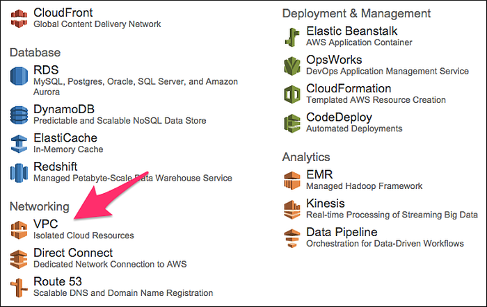
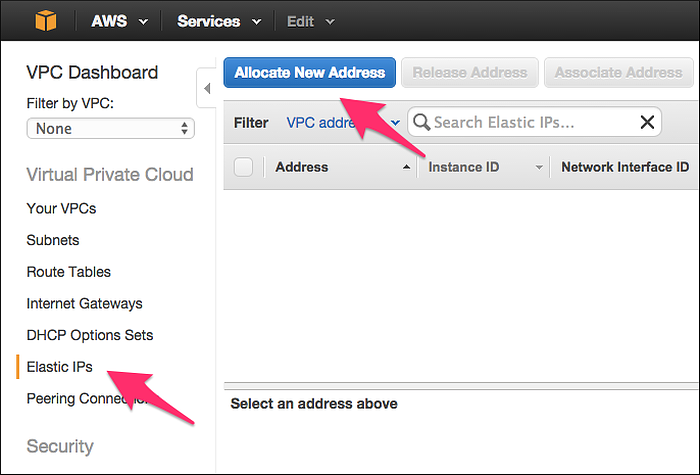
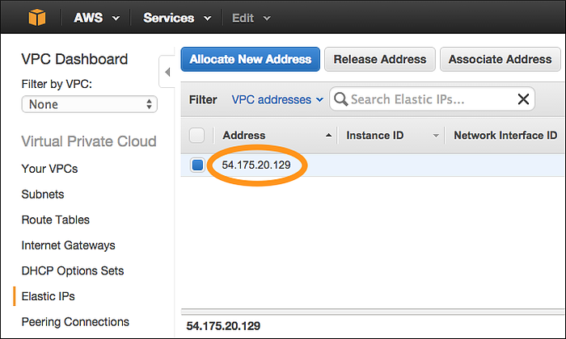
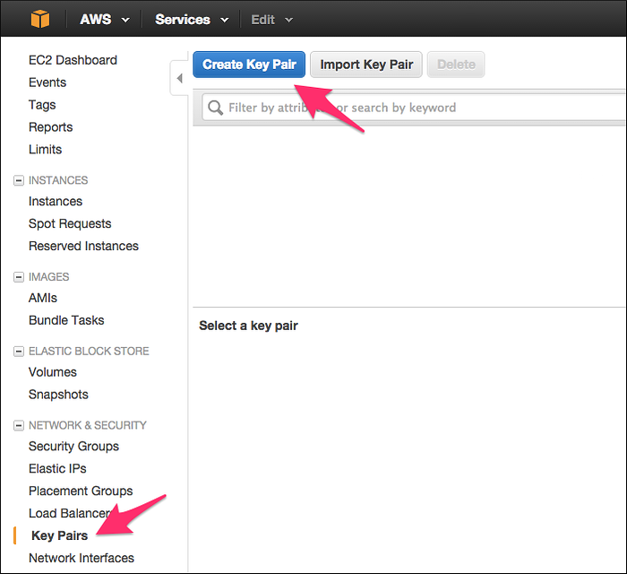
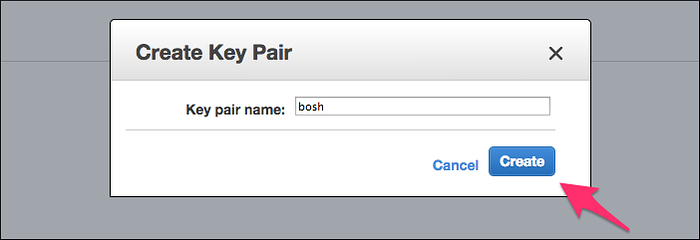
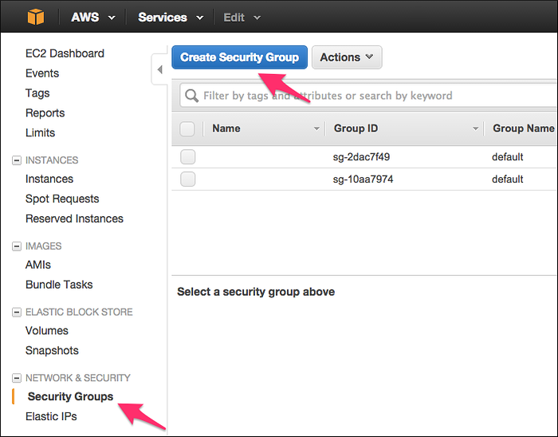
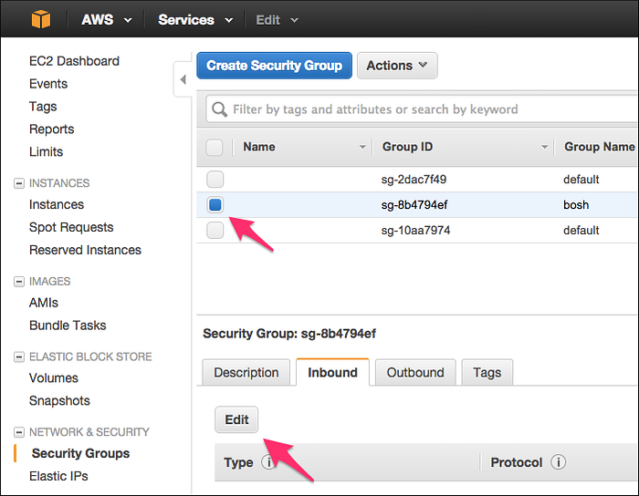
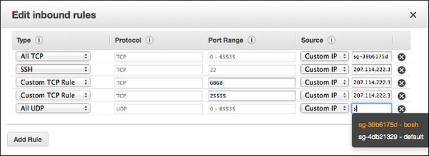

Deploying the Director
This document shows how to set up new environment on Amazon Web Services (AWS).
Step 1: Prepare an AWS Account¶
If you do not have an AWS account, create one.
To configure your AWS account:
- Obtain AWS credentials
- Create a Virtual Private Cloud (VPC)
- Create an Elastic IP
- Create a Key Pair
- Create and Configure Security Group
Obtain AWS Credentials ¶
Your AWS credentials consist of an Access Key ID and a Secret Access Key. Follow Creating IAM Users to create a new IAM user.
Create a Virtual Private Cloud (VPC) ¶
-
In the upper-right corner of the AWS Console, select a Region.

-
On the AWS Console, select VPC to get to the VPC Dashboard.

-
Click Start VPC Wizard.

-
Select VPC with a Single Public Subnet and click Select.
-
Complete the VPC form with the following information:
- IP CIDR block: 10.0.0.0/16
- VPC name: bosh
- Public subnet: 10.0.0.0/24
- Availability Zone: us-east-1a
- Subnet name: public
- Enable DNS hostnames: Yes
- Hardware tenancy: Default

-
Click Create VPC and click OK once VPC is successfully created.
-
Click Subnets and locate the "public" subnet in the VPC. Replace
SUBNET-IDandAVAILABILITY-ZONEin your deployment manifest with the "public" subnet Subnet ID, Availability Zone and Region (AZ without the trailing character).
Create an Elastic IP ¶
-
On the VPC Dashboard, click Elastic IPs and click Allocate New Address.

-
In the Allocate Address dialog box, click Yes, Allocate.
-
Replace
ELASTIC-IPin your deployment manifest with the allocated Elastic IP Address.
Create a Key Pair ¶
-
In the AWS Console, select EC2 to get to the EC2 Dashboard.
-
Click Key Pairs and click Create Key Pair.

-
In the Create Key Pair dialog box, enter "bosh" as the Key Pair name and click Create.

-
Save private key to
~/Downloads/bosh.pem.
Create and Configure Security Group ¶
-
On the EC2 Dashboard, click Security Groups and then click Create Security Group.

-
Complete the Create Security Group form with the following information:
- Security group name: bosh
- Description: BOSH deployed VMs
- VPC: Select the "bosh" VPC that you created in Create a Virtual Private Cloud.
-
Click Create

-
Select the created security group with group name "bosh", click the Inbound tab and click Edit.

-
Fill out the Edit inbound rules form and click Save.
Note: It highly discouraged to run any production environment with
0.0.0.0/0source or to make any BOSH management ports publicly accessible.Type Port Range Source Purpose Custom TCP Rule 22 (My IP) SSH access from CLI Custom TCP Rule 6868 (My IP) BOSH Agent access from CLI Custom TCP Rule 25555 (My IP) BOSH Director access from CLI All TCP 0 - 65535 ID of this security group Management and data access All UDP 0 - 65535 ID of this security group Management and data access Note: To enter your security group as a Source, select Custom IP, and enter "bosh". Note: The AWS Console should autocomplete the security group ID (e.g. "sg-12ab34cd").

Step 2: Deploy ¶
-
Install CLI v2.
-
Use
bosh create-envcommand to deploy the Director.
# Create directory to keep state $ mkdir bosh-1 && cd bosh-1 # Clone Director templates $ git clone https://github.com/cloudfoundry/bosh-deployment # Fill below variables (replace example values) and deploy the Director $ bosh create-env bosh-deployment/bosh.yml \ --state=state.json \ --vars-store=creds.yml \ -o bosh-deployment/aws/cpi.yml \ -v director_name=bosh-1 \ -v internal_cidr=10.0.0.0/24 \ -v internal_gw=10.0.0.1 \ -v internal_ip=10.0.0.6 \ -v access_key_id=AKI... \ -v secret_access_key=wfh28... \ -v region=us-east-1 \ -v az=us-east-1a \ -v default_key_name=bosh \ -v default_security_groups=[bosh] \ --var-file private_key=~/Downloads/bosh.pem \ -v subnet_id=subnet-ait8g34t
If running above commands outside of an AWS VPC, refer to [Exposing environment on a public IP](init-external-ip.md) for additional CLI flags. See [AWS CPI errors](aws-cpi.md#errors) for list of common errors and resolutions.
- Connect to the Director.
# Configure local alias $ bosh alias-env bosh-1 -e 10.0.0.6 --ca-cert <(bosh int ./creds.yml --path /director_ssl/ca) # Log in to the Director $ export BOSH_CLIENT=admin $ export BOSH_CLIENT_SECRET=`bosh int ./creds.yml --path /admin_password` # Query the Director for more info $ bosh -e bosh-1 env
- Save the deployment state files left in your deployment directory
bosh-1so you can later update/delete your Director. See Deployment state for details.
Previous: Create an environment